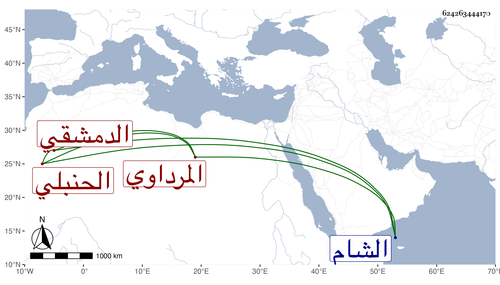

0902Sakhawi.DawLamic.ITO20230111-ara1.EIS1600.624263444170
Biography ID: 624263444170
705
أحمد بن يوسف المرداوي الدمشقي الحنبلي ويعرف بابن يوسف . ناب في قضاء بلده بل وفي الشام أيضا وكان فقيها نحويا حافظا لفروع مذهبه مفتيا لكن مع تساهله ونسبته إلى قبائح . وهو ممن أخذ عنه العلاء المرداوي قال بعضهم لا يعاب بأكثر من ميله لابن تيمية في اختياراته . توفي في صفر سنة خمسين وقد جاز السبعين وليس بابن ليوسف بن محمد بن عمر المرداوي الآتي .
